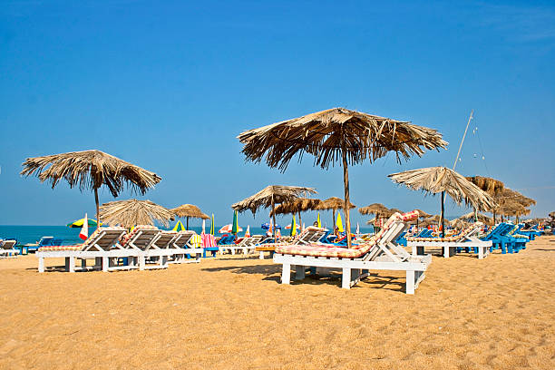

BEACHES

Calangute
It is unarguably one of the most popular beaches in Goa. It is also the busiest beach with restaurants, shacks, and clubs fringing it.
 OM BEACH
OM BEACH
It is a major tourist attraction in the coastal city of Gokarna, located in North Canara district.It takes the shape of an ‘Om’, a Hindu spiritual symbol.